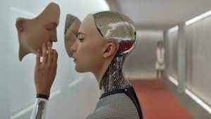

Chat GPT, Bard, Midjourney. Egy évvel ezelőtt ezek a szavak ismeretlenül csengtek mindannyiunknak. Mára azonban mindennapossá vált, hogy különféle feladataink megoldásához mesterséges intelligencia segítségét vesszük igénybe. Ez a legújabb forradalmi innováció azonban nem kizárólag pozitív változásokat hozott az életünkbe, hiszen vele együtt megjelent egy új konkfliktusforrás: a kreatív alkotók (szerzők és előadóművészek) és az AI-t létrehozó tech cégek közötti érdekellentét.
A szerzők azért elégedetlenek, mert a tech cégek az AI-t úgy „tanítják”, hogy ráeresztik őket az interneten ingyenesen fellelhető elképesztő mennyiségű szerzői jogilag védett tartalomra (képekre, zenékre, szövegekre, stb). Az AI később ezek felhasználásával generál új tartalmat a felhasználója által megadott utasításoknak („prompt”) megfelelően. Csakhogy a tanulási folyamathoz felhasznált, szerzői jogilag védett művek szerzői nem adják előzetes hozzájárulásukat sem ahhoz, hogy az AI tanítására használják műveiket, sem ahhoz, hogy annak felhasználásával, átalakításával generáljon a gép új tartalmat. Ráadásul a szerzőket nem tüntetik fel semmilyen módon az AI által generált „mű” alkotói között, és értelemszerűen semmilyen díjazást, kompenzációt nem kapnak az akaratukon kívül bekövetkezett közreműködésükért. Mindezt a szerzők és egyéb jogosultak méltánytalannak és a szerzői jog hagyományos alapelveivel összeegyeztethetetlennek tartják.
Az előadóművészek, színészek pedig egyre gyakrabban a megélhetésüket veszélyeztető eszközként tekintenek a mesterséges intelligenciára. Filmforgatásokon például ma már nem ritka, hogy a háttérszínészekről, statisztákról egyszeri alkalommal készítenek felvételeket, majd aláíratnak velük egy olyan széles körű nyilatkozatot, amivel beleegyeznek a közreműködésükkel rögzített anyag bármilyen – akár mesterséges intelligencia felhasználásával megvalósuló – megváltoztatásába, akár más műben, másik filmben való felhasználásába is. Természetesen a színésszel való előzetes egyeztetés és további díjfizetés nélkül. Értelemszerűen ez a színész, szinkronszínész szakma megélhetését alapjaiban veszélyezteti – nem véletlen, hogy az amerikai színészsztrájk egyik legfontosabb követelése épp az AI használatának szabályozására irányul.
Az Egyesült Államokban több per (class action) van már folyamatban az ehhez hasonló konfliktusokból eredően. Emellett pedig számos országban zajlik már a jogalkotási folyamat, hogy a mesterséges intelligencia által felvetett új kérdésekre a szerzői jog rendszerébe illeszthető válaszokat lehessen adni.
Szerzőként vagy előadóművészként azonban most sem vagy eszköztelen az AI által támasztott kihívásokkal szemben. Ha úgy érzed, hogy a mesterséges intelligencia használatával összefüggésben valamilyen hátrány ért, vagy ennek bekövetkezésétől tartasz, kérj időpontot, hogy egy konzultáció keretében megbeszélhessük, milyen lehetőségeid vannak!
A honlapon megjelenő minden információ tájékoztató jellegű, és nem minősül jogi tanácsadásnak, nem használható speciális jogi tanács vagy vélemény helyettesítéseként, és nem hoz létre ügyvéd- ügyfél viszonyt a honlap látogatója és az azt üzemeltető ügyvéd között. A honlapot működtető ügyvéd kifejezetten kizár minden a honlap használatából eredő felelősséget.
visszaügyvéd
Telefon: +36306454902
Email: info@kusnyer-gedeylegal.com
Cím: 1022 Budapest, Tulipán u. 9. 2/2
Ügyfélfogadás: előzetes időpont egyeztetés alapján.